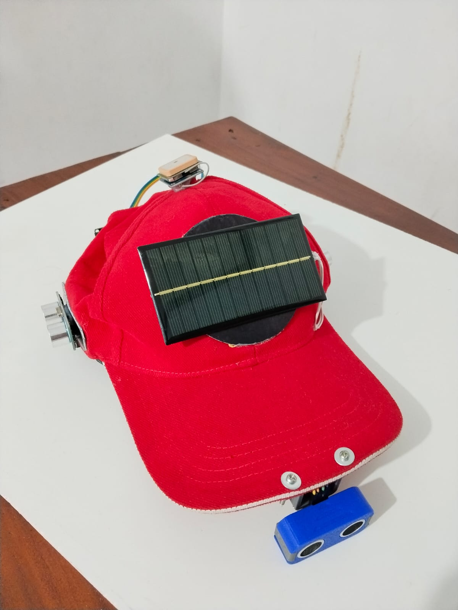

Project Gallery
The Identity and Physical Build of AIRIS

AIRIS is a revolutionary smart cap that integrates AI Camera, Ultrasonic Sensors, and GPS to provide real-time guidance for the visually impaired.

The ESP32-CAM analyzes the surroundings using Computer Vision models to identify large obstacles and objects in the user's path.
Detects physical obstacles within a 1-2 meter radius and provides instant haptic or audio feedback to prevent collisions.
The GPS module transmits precise coordinates to a cloud database, allowing family members to monitor the user's location via a web dashboard.
Self-charging system for extended outdoor use using renewable energy.
Tactile alerts through subtle vibrations for immediate obstacle warnings.
Seamless integration between hardware and cloud-based monitoring systems.
Object Accuracy (%)
Detection Range (cm)
Response Time (ms)
The Identity and Physical Build of AIRIS